GNUstep Examples help you get started with GNUstep coding. Find and re-use many useful code snippets. Download the latest examples tar.gz from the FTP site.
Calculator: a calculator for basic arithmetic.
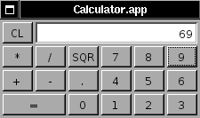
CurrencyConverter: converts from Euros to other
currencies.
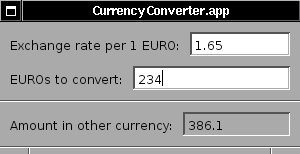
Finger: provides an interface to the finger, ping, whois and
traceroute utilities.
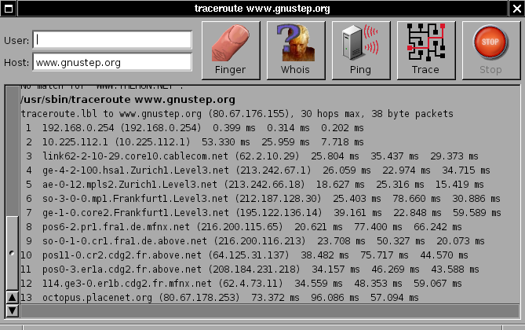
Classes:a test suite that contains four programs: NSBrowserTest
(tests NSBrowser), NSPanelTest (tests different types of panels),
NSProgressIndicator (uses threads to display a progress indicator)
and NSScreenTest (determines the type of screen that is being
used).
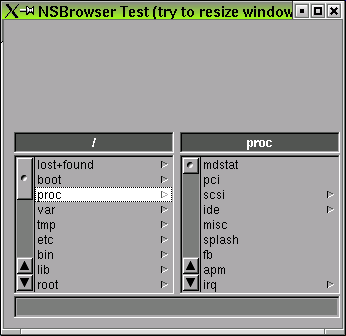
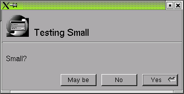
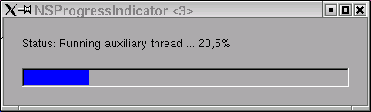
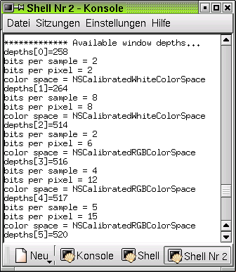
GSTest: contains a variety of tests e.g. an NSForm test.
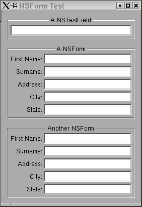
HostAddress: resolves addresses.
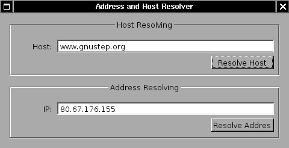
Ink: demonstrates the use of NSTextView.
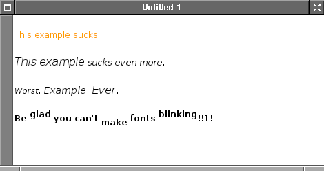
Old: this test suite contains a variety of older tests.
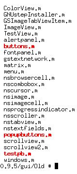
GFractal: a fractal viewer that computes several fractals
including the Mandelbrot set.
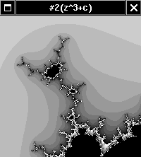
GPuzzle: simulates a jigsaw puzzle and illustrates the use of
clipping paths. Challenge: implement "cacheImageInRect" (NSWindow)
and update GPuzzle to use this method.
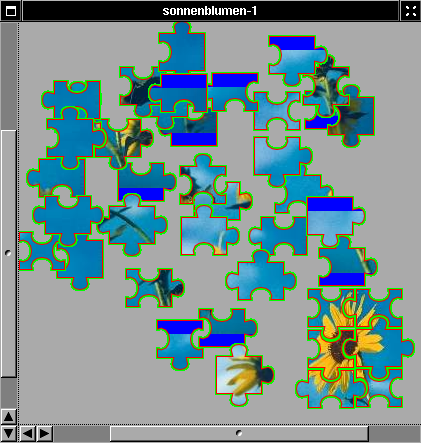